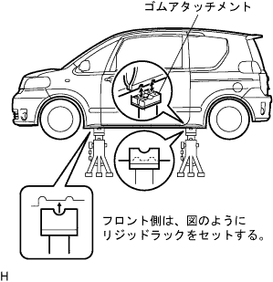

作業上の心得および注意事項 ジャッキ、リジッドラックおよびリフトの支持位置 |
車両は空車に近い状態を原則とし、重量物を積載したままでジャッキアップおよびリフトアップしない。
エンジン、ミッションなどの重量物を取りはずすと、車両の重心位置が移動する。そのため、バランスウェイトを転がらないように搭載するか、ミッションジャッキなどでジャッキ支持位置を保持する。
リフトの取扱書に従い、安全作業を行う。
フリーホイールビームでタイヤおよびホイールを傷つけない。
輪止めを使用して、車両を固定する。
平坦な場所で、輪止めを必ず使用して作業する。
|  |
リジッドラックは、図のようなゴムアタッチメント付きの物を使用する。
ジャッキおよびリジッドラックは、指定の位置を確実に支持する。
前輪をジャッキアップする場合は、パーキングブレーキを解除し、後輪後ろ側にのみ輪止めをする。
後輪をジャッキアップする場合は、前輪前側にのみ輪止めをする。
車両をジャッキで指示しただけの状態では作業および放置せず、必ずリジッドラックで支持する。
前輪または後輪のみジャッキアップした場合は、接地している車輪の前後両側に輪止めをする。
前輪のみジャッキアップされた状態からジャッキダウンする場合は、パーキングブレーキを解除し、後輪前側にのみ輪止めをする。
後輪のみジャッキアップされた状態からジャッキダウンする場合は、前輪後ろ側にのみ輪止めをする。
リフトの取扱書に従い、安全作業を行う。
受け台は、図のようなゴムアタッチメント付きの物を使用する。
車両は、リフトの中心と車両の重心が極力近くなる。(Lが短くなる)ように乗り入れる。
車両姿勢が水平になるように受け台の高さを調整し、受け台の溝とリジッドラック支持位置を確実に合わせる。
スイングアームは必ずロックして作業する。
タイヤが少し浮くまでリフトアップして車両を揺すり、車両が安定していることを確認する。
リフトの取扱書に従い、安全作業を行う。
プレートリフトアタッチメントを使用する。
プレートリフトで車両をリフトする場合、車両重心がリフト受台の車両重心許容範囲に入ることを確認する。
車両は必ず指定の位置に乗り入れる。
| 車両左右方向セット位置 |
|
| 車両前後方向セット位置 |
|
タイヤが少し浮くまでリフトアップして車両を揺すり、車両が安定していることを確認する。
リフトアップ時にジャッキアップポイント以外のボデーとリフトが当たらないことを確認する。